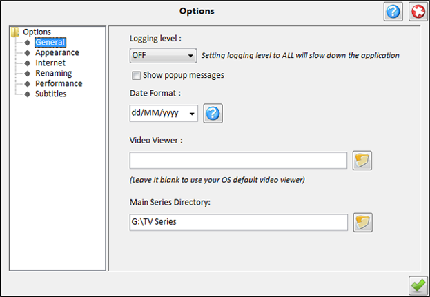

| General Options |
|---|
|  |
|---|
The following options are available:
-
Logging level -
Which kind of messages to report in the MySeries log file.
The levels are OFF (no logging), SEVERE (Fatal errors only),
WARNING(Warnings and higher level errors), INFO (Information , warning and fatal errors),
ALL (Log Everything)
-
Modal Windows -
If the dialogs show in modal mode or not
(In modal mode you cannot interact with the main window until the modal dialog is closed).
-
Date Format -
The format of the application's dates.Click on the question mark for a list of the patterns you
can use.
-
Look And Feel -
Change the look and feel of the application (Experimental mode and not available yet).
-
Use Skin Color -
Use a skin color on the application or not.
-
Set Skin Color -
Opens up a color chooser to choose the color of the skin.
-
Font -
Select the font and the size to use in the application. A preview of the current selected font is displayed
-
Check for updates -
If the application should check for updates on start up.
|